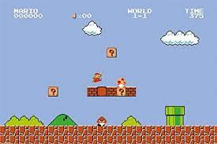

El comienzo de Mario no fue con ese nombre; su origen data de Jumpman, un personaje que el diseñador de videojuegos japonés, Shigeru Miyamoto, creó para rescatar a una princesa cautiva por un gorila en el juego Donkey Kong (1981). Este producto de entretenimiento surgió a partir de la caricatura de Popeye, donde él es representado por Jumpman, Olivia tiene lugar en la damisela y Brutus se ve reflejado en el simio. El impacto de la entrega provocó que Jumpman, que fue presentado como un carpintero, desarrollara varios cambios para tener su propio juego arcade: Mario Bros, lanzado en 1983. En este formato propio, Mario conservó la capacidad de saltar para derrotar a sus enemigos, aunque cambió de profesión (se convirtió en fontanero) y rivales (principalmente tortugas y hongos). Además, adquirió un hermano: Luigi.
Tras su salida, Mario Bros fue bien recibido, por lo que la compañía Nintendo decidió lanzar Super Mario Bros el 13 de septiembre de 1985 para la consola Nintendo Entertainment System (NES). Este videojuego rompió récord en ese entonces, pues logró vender más de 10 millones de cartuchos.
A partir de esa década, Mario se volvió un referente de la cultura pop, pues además de las múltiples versiones del personaje - como tenista, conductor y peleador -, también ha aparecido en la promoción de otros productos o eventos. Además, ya tuvo una película, Super Mario Bros (1993), donde fue interpretado por el actor Bob Hoskins, y tiene su día mundial, el 10 de marzo.